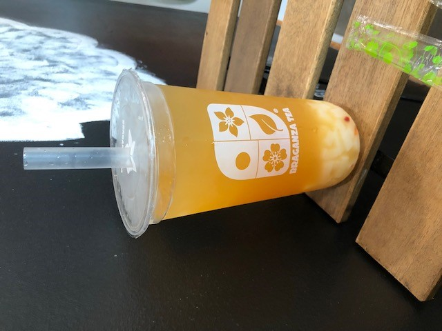

Homemade Boba Recipies
Passionfruit Boba

Ingredients
- Uncooked Boba
- Passionfruit Jam
- Ice
- Water
Instructions
- Heat water on stove until boiling, then add boba
- Boil for 3 minutes, then simmer for 3 more minutes
- Take boba off stove and drain
- In a cup, add boba as desired
- Add 3 spoonfuls of passionfruit jam
- Add ice and water to preference
- Mix well
Brown Sugar Milk Tea
Ingredients

- Uncooked boba
- Brown sugar
- Milk tea powder
- Water
- Milk
Instructions
- Heat water on stove until boiling, then add boba
- Boil for 3 minutes, then simmer for 3 more minutes
- Take boba off stove and drain, then add to a bowl
- Add 3 spoonfuls of brown sugar, mix until dissolved
- Dissolve milk tea powder in 1/4 cup of boiling water
- In a cup, add boba as desired
- Add ice then milk until only a little volume left
- Pour in concentrated milk tea at the top
- Mix well